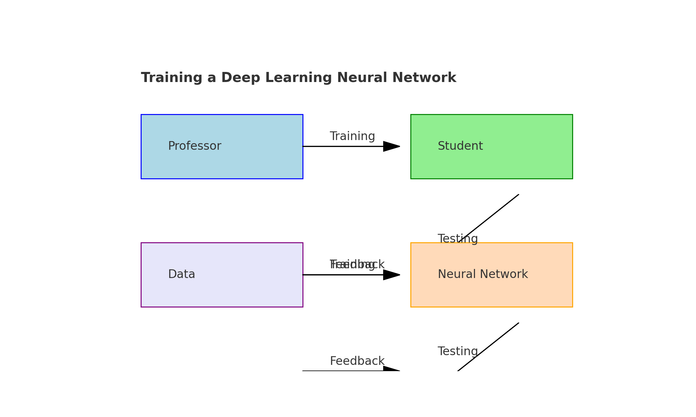
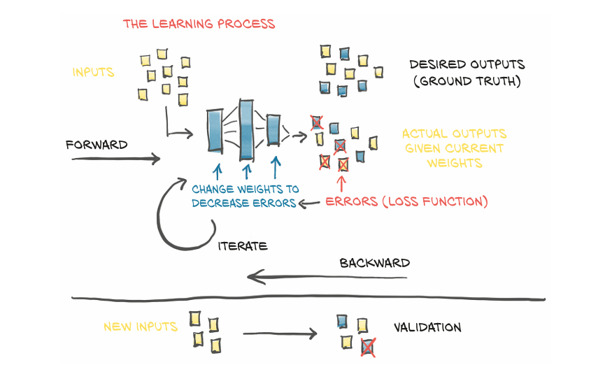
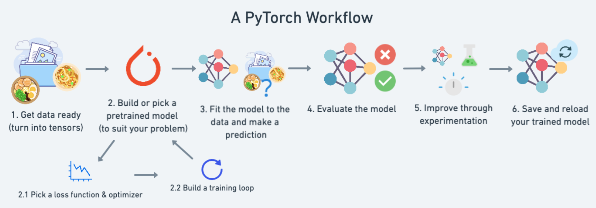
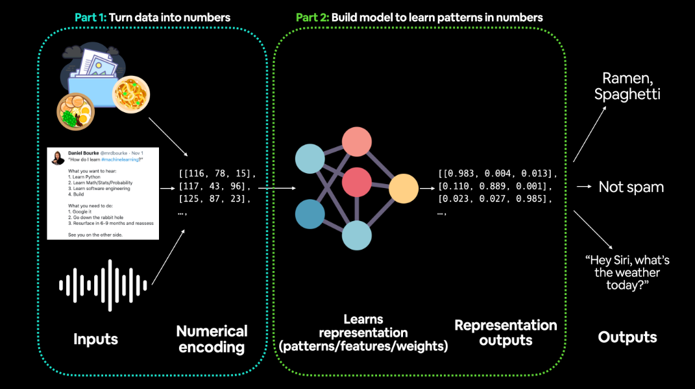
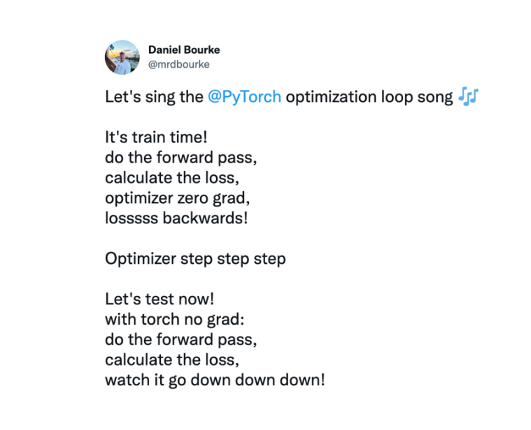
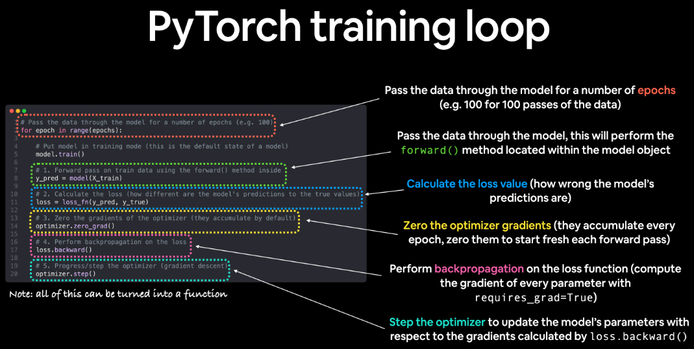
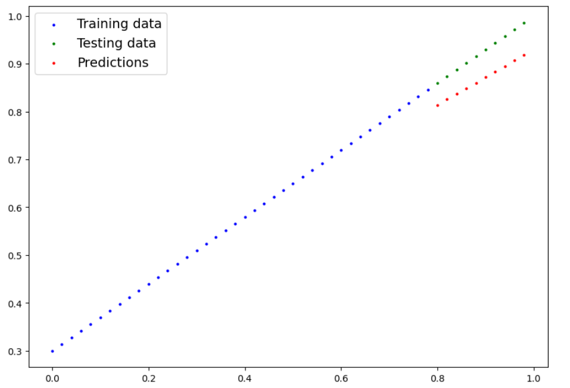

01. PyTorch Workflow Fundamentals
Training a deep learning neural network is similar to a professor training a student for an exam. Initially, the professor gathers the syllabus and splits it into a training part and a test part. The student is trained on the training material and is then subjected to the test. Based on the test results, the professor calculates the score and suggests that the student minimize their errors. Similarly, in deep learning, a model is trained on a dataset and then evaluated on a test set, with adjustments made to minimize the loss function.
The crux of machine and deep learning is to take data, build an algorithm(neural network) to discover deep patterns in it and use the discovered patterns to generate new data.
There are many ways to design this process. We start from the very basic; which is predicting a straight line. We will see if we can build a PyTorch model that learns the patterns of straight line and matches it.

All of the materials for this course are available on GitHub
If you got into any trouble, you can ask questions on the Discussion page there too.
Now we are going to import torch, torch.nn ( nn stands for neural network and this package contains the building block for creating a neural networks in PyTorch) and matplotlib for plotting graphs
import torch
from torch import nn # nn contains all of PyTorch's building blocks for neural networks
import matplotlib.pyplot as plt
# Check PyTorch version
torch.__version__
output: '1.12.1+cu113'
1. Data(Preparing and Loading)
Data can be anything that we can imagine. For instance an excel sheet, images of any kind, vidoes(youtube etc), audio files like songs or podcasts, blackhole dimensions, text and more.
Machine learning has two main steps:
Sometimes, these steps happen together.
What if there is no data?
No problem! we can create our own.
Let's start with a simple example:
# Create *known* parameters
weight = 0.7
bias = 0.3
# Create data
start = 0
end = 1
step = 0.02
X = torch.arange(start, end, step).unsqueeze(dim=1)
y = weight * X + bias
X[:10], y[:10]
output:
(tensor([[0.0000],
[0.0200],
[0.0400],
[0.0600],
[0.0800],
[0.1000],
[0.1200],
[0.1400],
[0.1600],
[0.1800]]),
tensor([[0.3000],
[0.3140],
[0.3280],
[0.3420],
[0.3560],
[0.3700],
[0.3840],
[0.3980],
[0.4120],
[0.4260]]))
Beautiful! Now, let’s build a model to learn the relationship between X (features) and y (labels).
Split the data into training and test sets
We have our data, but before building a model, we need to split it. Creating training, test, and (if needed) validation sets is a crucial step in any machine learning project. Each split has a specific purpose:
| Split | Purpose | Amount of total data | How often is it used? |
|---|---|---|---|
| Training set | The model learns from this data (like the course materials you study during the semester). | ~60-80% | Always |
| Validation set | The model gets tuned on this data (like the practice exam you take before the final exam). | ~10-20% | Often but not always |
| Testing set | The model gets evaluated on this data to test what it has learned (like the final exam you take at the end of the semester). | ~10-20% | Always |
For now, we’ll use just a training set and a test set:
# Create train/test split
train_split = int(0.8 * len(X)) # 80% of data used for training set, 20% for testing
X_train, y_train = X[:train_split], y[:train_split]
X_test, y_test = X[train_split:], y[train_split:]
len(X_train), len(y_train), len(X_test), len(y_test)
output: (40, 40, 10, 10)
Great! We have 40 samples for training (X_train & y_train) and 10 samples for testing (X_test & y_test). Our model will learn the relationship between X_train and y_train, and we’ll evaluate its performance on X_test and y_test. But right now, our data is just numbers on a page. Let's create a function to visualize it and get a better understanding of the data!
def plot_predictions(train_data=X_train,
train_labels=y_train,
test_data=X_test,
test_labels=y_test,
predictions=None):
"""
Plots training data, test data and compares predictions.
"""
plt.figure(figsize=(10, 7))
# Plot training data in blue
plt.scatter(train_data, train_labels, c="b", s=4, label="Training data")
# Plot test data in green
plt.scatter(test_data, test_labels, c="g", s=4, label="Testing data")
if predictions is not None:
# Plot the predictions in red (predictions were made on the test data)
plt.scatter(test_data, predictions, c="r", s=4, label="Predictions")
# Show the legend
plt.legend(prop={"size": 14});
plot_predictions();
Epic! Now, instead of just numbers on a page, we can see that our data forms a straight line. This helps visualize the relationship between the features (X) and labels (y), making it easier to understand how our model will learn from the data.
2. Build a model
Now that we have data, let’s build a model that uses the blue dots (features) to predict the green dots (labels). We’ll dive right into the code, then explain each step.
Our goal is to replicate a standard linear regression model using pure PyTorch. Let's get started!
# Create a Linear Regression model class
class LinearRegressionModel(nn.Module): # <- almost everything in PyTorch is a nn.Module (think of this as neural network lego blocks)
def __init__(self):
super().__init__()
self.weights = nn.Parameter(torch.randn(1, # <- start with random weights (this will get adjusted as the model learns)
dtype=torch.float), # <- PyTorch loves float32 by default
requires_grad=True) # <- can we update this value with gradient descent?)
self.bias = nn.Parameter(torch.randn(1, # <- start with random bias (this will get adjusted as the model learns)
dtype=torch.float), # <- PyTorch loves float32 by default
requires_grad=True) # <- can we update this value with gradient descent?))
# Forward defines the computation in the model
def forward(self, x: torch.Tensor) -> torch.Tensor: # <- "x" is the input data (e.g. training/testing features)
return self.weights * x + self.bias # <- this is the linear regression formula (y = m*x + b)
PyTorch Model Building Essentials
PyTorch has four essential modules that allow you to create almost any neural network you can imagine:
| PyTorch Module | What Does It Do? |
|---|---|
| torch.nn | Contains all of the building blocks for computational graphs (essentially a series of computations executed in a particular way). |
| torch.nn.Parameter | Stores tensors that can be used with nn.Module. If requires_grad=True, gradients (used for updating model parameters via gradient descent) are calculated automatically. This is often referred to as "autograd". |
| torch.nn.Module | The base class for all neural network modules, all the building blocks for neural networks are subclasses. If you're building a neural network in PyTorch, your models should subclass nn.Module. Requires a forward() method to be implemented. |
| torch.optim | Contains various optimization algorithms (these tell the model parameters stored in nn.Parameter how to best change to improve gradient descent and in turn reduce the loss). |
| def forward() | All nn.Module subclasses require a forward() method. This defines the computation that will take place on the data passed to the particular nn.Module (e.g., the linear regression formula). |
Checking The Contents of a PyTorch Model
Now that we've covered the essentials, let's create a model instance using the class we've defined. After that, we can check the model's parameters by calling .parameters(). This will give us insight into the weights and biases the model has learned so far. Let's dive in!
# Set manual seed since nn.Parameter are randomly initialized
torch.manual_seed(42)
# Create an instance of the model (this is a subclass of nn.Module that contains nn.Parameter(s))
model_0 = LinearRegressionModel()
# Check the nn.Parameter(s) within the nn.Module subclass we created
list(model_0.parameters())
[Parameter containing:
tensor([0.3367], requires_grad=True),
Parameter containing:
tensor([0.1288], requires_grad=True)]
We can also inspect the state of the model, which shows what the model contains, using the .state_dict() method. This returns a dictionary of all the parameters (weights and biases) that the model holds, providing a more detailed view of the model's internal state.
# List named parameters
model_0.state_dict()
OrderedDict([('weights', tensor([0.3367])), ('bias', tensor([0.1288]))])
Notice how the values for weights and biases from model_0.state_dict() come out as random float tensors?
This happens because we initialized them using torch.randn(), which generates random values.
The idea is to start with random parameters, then train the model to update these parameters so they fit the data well — ultimately moving toward the values we set when creating our straight-line data (the hardcoded weight and bias).
Making predictions using torch.inference_mode()
To check how well the model is performing, we can pass the test data (X_test) through the model and see how closely it predicts y_test.
When we pass data to our model, it will go through the forward() method, which will execute the computation we've defined and produce predictions.
Now, let's go ahead and make some predictions!
# Make predictions with model
with torch.inference_mode():
y_preds = model_0(X_test)
# Note: in older PyTorch code you might also see torch.no_grad()
# with torch.no_grad():
# y_preds = model_0(X_test)
Hmm, you probably noticed we used torch.inference_mode() as a context manager (with torch.inference_mode():) to make the predictions.
As the name suggests, torch.inference_mode() is used when making predictions (inference) with a trained model.
It turns off certain things, like gradient tracking (which is necessary for training but not for inference), to make forward passes faster. This is why it’s used during inference—it helps improve efficiency by skipping unnecessary operations.
We've made some predictions now we will see how they look like
# Check the predictions
print(f"Number of testing samples: {len(X_test)}")
print(f"Number of predictions made: {len(y_preds)}")
print(f"Predicted values:\n{y_preds}")
Number of testing samples: 10
Number of predictions made: 10
Predicted values:
tensor([[0.3982],
[0.4049],
[0.4116],
[0.4184],
[0.4251],
[0.4318],
[0.4386],
[0.4453],
[0.4520],
[0.4588]])
Now we have made some predictions, let's visualize them to see how well our model is performing.
plot_predictions(predictions=y_preds)
y_test - y_predstensor([[0.4618], [0.4691], [0.4764], [0.4836], [0.4909], [0.4982], [0.5054], [0.5127], [0.5200], [0.5272]])
The difference between the actual values (y_test) and the predicted values (y_preds) is shown above. This difference is known as the loss, which we'll cover in the next section.
Our model hasn't even look at the blue dots yet to learn the relationship between X and y. It's just guessing based on the random weights and biases we initialized it with.
It is time to change that!
3. Train a model
Right now our model is making random predictions. We need to train it to make better predictions.
To do this, we need to update its internal parameters (weights and biases) so that it learns the relationship between X and y.
This is where the magic of deep learning happens!
Creating a loss function and optimizer in PyTorch
To train a model, we need two things:
Let's dive into the code and create these two essential components!
To improve our model, we need to define a loss function and an optimizer. The choice of these depends on the type of problem you're solving. For example, for a regression problem like ours, we can use the mean absolute error (MAE), which is under 'torch.nn.L1Loss()' in PyTorch as our loss function.

Mean absolute error (MAE, in PyTorch: torch.nn.L1Loss) measures the absolute difference between two points (predictions and labels) and then takes the mean across all examples.
And we'll use SGD, torch.optim.SGD(params, lr) where:
params : is the target model parameters you'd like to optimize (e.g. the weights and bias values we randomly set before).
lr: is the learning rate, which controls how much the model adjusts its parameters in response to the loss.
# Create the loss function loss_fn = nn.L1Loss() # MAE loss is same as L1Loss # Create the optimizer optimizer = torch.optim.SGD(params=model_0.parameters(), # parameters of target model to optimize lr=0.01) # learning rate (how much the optimizer should change parameters at each step, higher=more (less stable), lower=less (might take a long time))$$$output$$$
Creating an optimization loop in PyTorch
🎉 Now that we have a loss function and an optimizer, it’s time to create a training loop and a testing loop.
These are called "loops" because the model processes (loops through) each sample in the datasets. There is a very nice PyTorch optimization loop slogan to quickly memorize the steps: "Forward, Backward, Update, Repeat!" and a song too by Danial Bourkerl.

PyTorch Training Loop
| Number | Step Name | What Does It Do? | Code Example |
|---|---|---|---|
| 1 | Forward Pass | The model goes through all of the training data once, performing its forward() function calculations. |
model(x_train) |
| 2 | Calculate the Loss | The model's outputs (predictions) are compared to the ground truth and evaluated to see how wrong they are. | loss = loss_fn(y_pred, y_train) |
| 3 | Zero Gradients | The optimizer's gradients are set to zero (they are accumulated by default) so they can be recalculated for the specific training step. | optimizer.zero_grad() |
| 4 | Perform Backpropagation on the Loss | Computes the gradient of the loss with respect to every model parameter to be updated (each parameter with requires_grad=True). This is known as backpropagation, hence "backwards". |
loss.backward() |
| 5 | Update the Optimizer (Gradient Descent) | Update the parameters with requires_grad=True with respect to the loss gradients in order to improve them. |
optimizer.step() |

1. Calculate the loss (
loss = ...) before performing backpropagation on it (loss.backward()). 2. Zero gradients (
optimizer.zero_grad()) before computing the gradients of the loss with respect to every model parameter (loss.backward()).3. Step the optimizer (
optimizer.step()) after performing backpropagation on the loss (loss.backward()).
PyTorch Testing Loop
As for the testing loop (evaluating loop), the typical steps include:
| Number | Step Name | What Does It Do? | Code Example |
|---|---|---|---|
| 1 | Forward Pass | The model goes through all of the testing data once, performing its forward() function calculations. |
model(x_test) |
| 2 | Calculate the Loss | The model's outputs (predictions) are compared to the ground truth and evaluated to see how wrong they are. | loss = loss_fn(y_pred, y_test) |
| 3 | Calculate Evaluation Metrics (Optional) | Alongside the loss value, you may want to calculate other evaluation metrics such as accuracy on the test set. | Custom functions |
During testing, backpropagation (loss.backward() ) and optimizer updates (optimizer.step() ) are not performed because the model's parameters remain unchanged. These parameters were already optimized during training. In the testing phase, our focus is solely on obtaining predictions from the model by running a forward pass over the test data.
torch.manual_seed(42) # Set the number of epochs (how many times the model will pass over the training data) epochs = 100 # Create empty loss lists to track values train_loss_values = [] test_loss_values = [] epoch_count = [] for epoch in range(epochs): ### Training # Put model in training mode (this is the default state of a model) model_0.train() # 1. Forward pass on train data using the forward() method inside y_pred = model_0(X_train) # print(y_pred) # 2. Calculate the loss (how different are our models predictions to the ground truth) loss = loss_fn(y_pred, y_train) # 3. Zero grad of the optimizer optimizer.zero_grad() # 4. Loss backwards loss.backward() # 5. Progress the optimizer optimizer.step() ### Testing # Put the model in evaluation mode model_0.eval() with torch.inference_mode(): # 1. Forward pass on test data test_pred = model_0(X_test) # 2. Caculate loss on test data test_loss = loss_fn(test_pred, y_test.type(torch.float)) # predictions come in torch.float datatype, so comparisons need to be done with tensors of the same type # Print out what's happening if epoch % 10 == 0: epoch_count.append(epoch) train_loss_values.append(loss.detach().numpy()) test_loss_values.append(test_loss.detach().numpy()) print(f"Epoch: {epoch} | MAE Train Loss: {loss} | MAE Test Loss: {test_loss} ")Epoch: 0 | MAE Train Loss: 0.31288138031959534 | MAE Test Loss: 0.48106518387794495 Epoch: 10 | MAE Train Loss: 0.1976713240146637 | MAE Test Loss: 0.3463551998138428 Epoch: 20 | MAE Train Loss: 0.08908725529909134 | MAE Test Loss: 0.21729660034179688 Epoch: 30 | MAE Train Loss: 0.053148526698350906 | MAE Test Loss: 0.14464017748832703 Epoch: 40 | MAE Train Loss: 0.04543796554207802 | MAE Test Loss: 0.11360953003168106 Epoch: 50 | MAE Train Loss: 0.04167863354086876 | MAE Test Loss: 0.09919948130846024 Epoch: 60 | MAE Train Loss: 0.03818932920694351 | MAE Test Loss: 0.08886633068323135 Epoch: 70 | MAE Train Loss: 0.03476089984178543 | MAE Test Loss: 0.0805937647819519 Epoch: 80 | MAE Train Loss: 0.03132382780313492 | MAE Test Loss: 0.07232122868299484 Epoch: 90 | MAE Train Loss: 0.02788739837706089 | MAE Test Loss: 0.06473556160926819
Great! It seems like our loss is decreasing with each epoch. Let's visualize it with a plot to get a clearer picture.
# Plot the loss curves
plt.plot(epoch_count, train_loss_values, label="Train loss")
plt.plot(epoch_count, test_loss_values, label="Test loss")
plt.title("Training and test loss curves")
plt.ylabel("Loss")
plt.xlabel("Epochs")
plt.legend();
Awesome! The loss curves indicate that the loss is gradually decreasing over time. Since loss represents how far off our model's predictions are, a lower loss means better performance.
But what caused this improvement?
Thanks to the loss function and optimizer, the model's internal parameters—such as weights and biases—were adjusted to better capture the patterns in the data.
Now, let's check our model's state_dict() to see how closely the learned parameters match the original values we set for weights and biases.
# Find our model's learned parameters
print("The model learned the following values for weights and bias:")
print(model_0.state_dict())
print("\nAnd the original values for weights and bias are:")
print(f"weights: {weight}, bias: {bias}")
The model learned the following values for weights and bias:
OrderedDict([('weights', tensor([0.5784])), ('bias', tensor([0.3513]))])
And the original values for weights and bias are:
weights: 0.7, bias: 0.3
The model has learned the relationship between X and y! The weights and bias values are now closer to the original values we set.
It’s unlikely that the model will ever predict them with complete precision, especially with more complex datasets. But that’s perfectly fine—often, a close approximation is all we need to achieve great results.
This is the essence of machine learning and deep learning: instead of manually determining the optimal values that define our data, we train a model to discover them automatically.
Making predictions with a trained PyTorch model (inference)
Once you've trained a model, the next step is to use it for making predictions.
We've already seen a preview of this in the training and testing code, and the process outside of those loops follows a similar approach.
When performing inference (making predictions) with a PyTorch model, keep these three key points in mind:
- Switch the model to evaluation mode: Use
model.eval(). - Use the inference mode context manager: Wrap your code in
with torch.inference_mode(): ...to optimize performance. - Ensure consistency in device placement: The model and data should be on the same device (either all on the CPU or all on the GPU).
The first two steps disable unnecessary calculations and settings that PyTorch typically applies during training, making inference faster. The third step prevents device-related errors that could arise from mixing CPU and GPU operations.
# 1. Set the model in evaluation mode model_0.eval() # 2. Setup the inference mode context manager with torch.inference_mode(): # 3. Make sure the calculations are done with the model and data on the same device # in our case, we haven't setup device-agnostic code yet so our data and model are # on the CPU by default. # model_0.to(device) # X_test = X_test.to(device) y_preds = model_0(X_test) y_predstensor([[0.8141], [0.8256], [0.8372], [0.8488], [0.8603], [0.8719], [0.8835], [0.8950], [0.9066], [0.9182]])
Nice! We've made some predictions with our trained model, now how do they look?
plot_predictions(predictions=y_preds)

Awesome! Those red dots are now much closer than before!
Now, let's move on to the next step—saving and reloading a model in PyTorch.
5. Saving and loading a PyTorch model
Once you've trained a PyTorch model, you'll likely want to save it and use it elsewhere.
For instance, you might train your model on Google Colab or a local machine with a GPU, but later, you may need to deploy it in an application where others can access it.
Alternatively, you might want to store your model’s progress so you can resume training or testing at a later time.
When it comes to saving and loading models in PyTorch, there are three key methods to be familiar with. These approaches are based on PyTorch’s official guide for saving and loading models.
| PyTorch Method | What Does It Do? |
|---|---|
torch.save |
Saves a serialized object to disk using Python's pickle utility. It can be used to save models, tensors, and other Python objects such as dictionaries. |
torch.load |
Uses pickle's unpickling features to deserialize and load pickled Python object files (such as models, tensors, or dictionaries) into memory. It also allows specifying the device (CPU, GPU, etc.) where the object should be loaded. |
torch.nn.Module.load_state_dict |
Loads a model’s parameter dictionary using a saved state_dict() object, allowing for efficient restoration of trained model parameters. |
Saving a PyTorch model's state_dict()
The best practice for saving and loading a model for inference (making predictions) is to save and restore its state_dict().
Let's go through the process step by step:
- Create a directory for storing models, naming it
models, using Python'spathlibmodule. - Define a file path where the model will be saved.
- Save the model's state dictionary using
torch.save(obj, f), whereobjis thestate_dict()of the model andfis the target file path.
from pathlib import Path # 1. Create models directory MODEL_PATH = Path("models") MODEL_PATH.mkdir(parents=True, exist_ok=True) # 2. Create model save path MODEL_NAME = "01_pytorch_workflow_model_0.pth" MODEL_SAVE_PATH = MODEL_PATH / MODEL_NAME # 3. Save the model state dict print(f"Saving model to: {MODEL_SAVE_PATH}") torch.save(obj=model_0.state_dict(), # only saving the state_dict() only saves the models learned parameters f=MODEL_SAVE_PATH)
Saving model to: models/01_pytorch_workflow_model_0.pth
# Check the saved file path !ls -l models/01_pytorch_workflow_model_0.pth-rw-rw-r-- 1 daniel daniel 1063 Nov 10 16:07 models/01_pytorch_workflow_model_0.pth
Loading a saved PyTorch model's state_dict()
Since we've now got a saved model state_dict() at models/01_pytorch_workflow_model_0.pth, we can load it using torch.nn.Module.load_state_dict(torch.load(f)), where f is the file path of our saved model state_dict().
Why call torch.load() inside torch.nn.Module.load_state_dict()?
Since we only saved the model’s state_dict(), which is a dictionary containing the learned parameters, and not the entire model, we first need to load the state_dict() using torch.load(). Then, we pass that state_dict() to a new instance of our model, which is a subclass of nn.Module.
Why not save the entire model?
Saving the full model instead of just the state_dict() might seem more straightforward. However, as the PyTorch documentation states:
The disadvantage of this approach (saving the whole model) is that the serialized data is bound to the specific classes and the exact directory structure used when the model is saved...
Because of this, using the entire model file in different projects or after modifying the directory structure can cause compatibility issues.
Instead, we use the more flexible approach of saving and loading just the state_dict(), which is essentially a dictionary of model parameters.
Let's test this by creating another instance of LinearRegressionModel(), which is a subclass of torch.nn.Module. Since it's an instance of nn.Module, it will have the built-in method load_state_dict().
# Instantiate a new instance of our model (this will be instantiated with random weights) loaded_model_0 = LinearRegressionModel() # Load the state_dict of our saved model (this will update the new instance of our model with trained weights) loaded_model_0.load_state_dict(torch.load(f=MODEL_SAVE_PATH))< All keys matched successfully >
Excellent! It looks like things matched up.
Now, to test our loaded model, let's use it for inference (making predictions) on the test dataset.
# 1. Put the loaded model into evaluation mode loaded_model_0.eval() # 2. Use the inference mode context manager to make predictions with torch.inference_mode(): loaded_model_preds = loaded_model_0(X_test) # perform a forward pass on the test data with the loaded model
Now we've made some predictions with the loaded model, let's see if they're the same as the previous predictions.
# Compare previous model predictions with loaded model predictions (these should be the same)
y_preds == loaded_model_preds
tensor([[True],
[True],
[True],
[True],
[True],
[True],
[True],
[True],
[True],
[True]])
Nice! It looks like the loaded model predictions are the same as the previous model predictions (predictions made prior to saving). This indicates our model is saving and loading as expected.
Exercises:
Create a straight line dataset
Use the linear regression formula: weight * X + bias.
- Set
weight = 0.3andbias = 0.9. - Ensure there are at least 100 data points.
Split the dataset
- Divide the dataset into 80% training and 20% testing.
Visualize the data
- Plot the training and testing data to make the dataset more understandable.
Build a PyTorch model
- Subclass
nn.Module. - Inside, include a randomly initialized
nn.Parameter()for weight and bias withrequires_grad=True. - Implement the
forward()method to compute the linear regression function.
Initialize the model
- Create an instance of the model.
- Check its
state_dict().
Loss function and optimizer
- Use
nn.L1Loss()as the loss function. - Use
torch.optim.SGD(params, lr)as the optimizer. - Set the learning rate to
0.01. - Optimize the parameters of the model.
Training loop
- Train the model for 300 epochs.
- Test the model on the test dataset every 20 epochs.
Make predictions
- Use the trained model to make predictions on the test data.
Visualize the predictions
- Plot the predictions against the original training and testing data.
- Ensure the predictions are in the correct format (e.g., moved from GPU to CPU if necessary).
Save the trained model
- Save the model's
state_dict()to a file.
Load the saved model
- Create a new instance of the model.
- Load the saved
state_dict()into it.
Verify the loaded model
- Perform predictions with the loaded model on the test data.
- Confirm that the predictions match those from the original trained model.
Extra-curriculum:
Extra-curriculum
- Listen to The Unofficial PyTorch Optimization Loop Song to help remember the steps in a PyTorch training/testing loop.
- Read What is torch.nn, really? by Jeremy Howard for a deeper understanding of how one of the most important modules in PyTorch works.
- Spend 10 minutes exploring the PyTorch documentation cheatsheet to get familiar with different PyTorch modules.
- Spend 10 minutes reading the loading and saving documentation on the PyTorch website to understand the different saving and loading options available.
- Spend 1-2 hours learning about the internals of gradient descent and backpropagation, the key algorithms behind model learning:
- Read the Wikipedia page for Gradient Descent.
- Read Gradient Descent Algorithm — A Deep Dive by Robert Kwiatkowski.
- Watch Gradient Descent: How Neural Networks Learn by 3Blue1Brown.
- Watch What is Backpropagation Really Doing? by 3Blue1Brown.
- Read the Wikipedia page for Backpropagation.